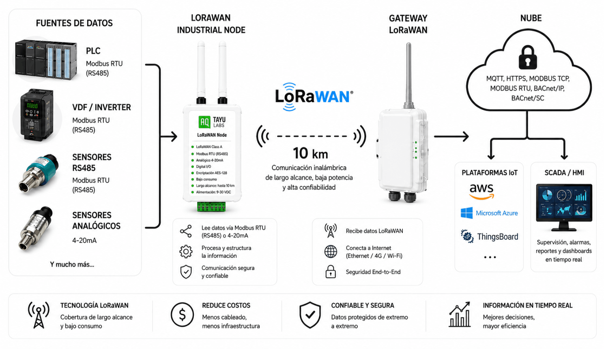
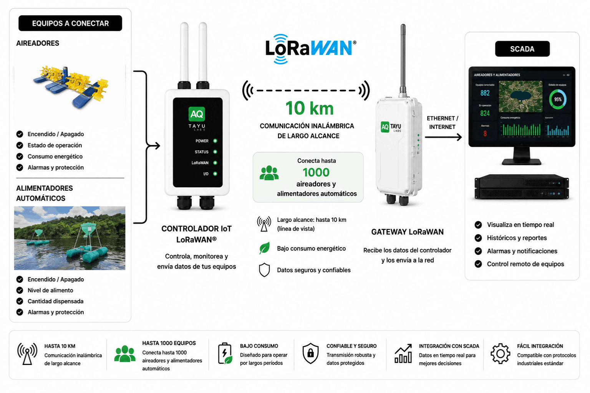
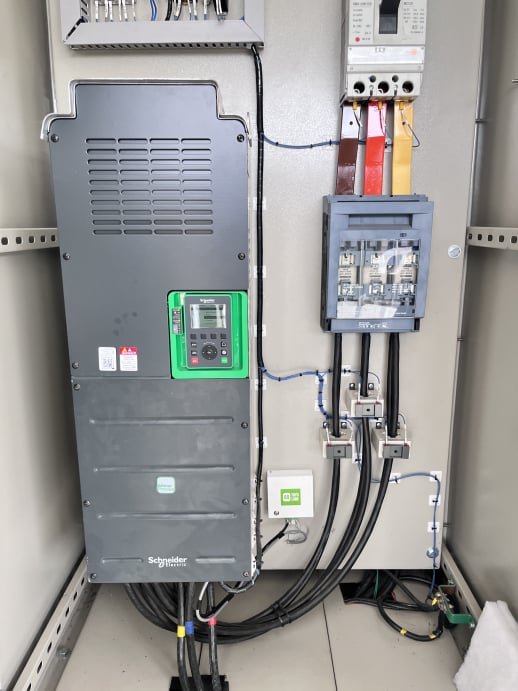
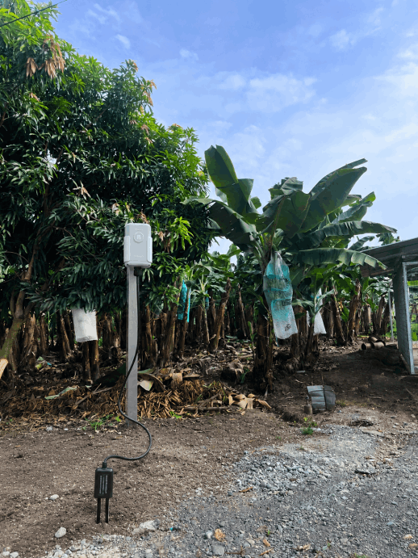
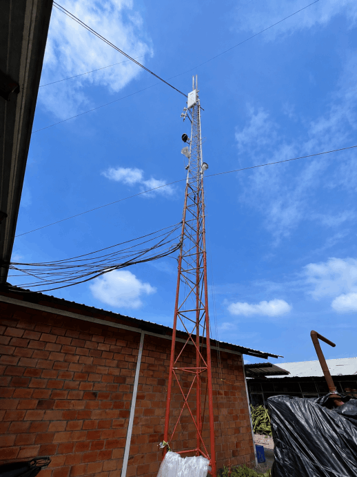
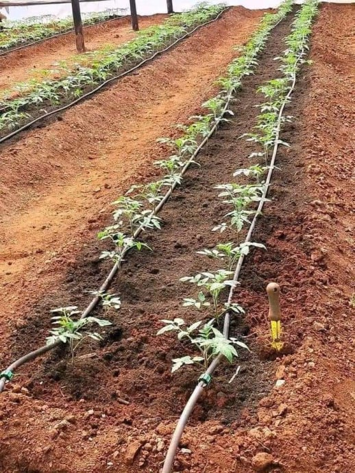

Lee datos de PLCs, VDFs, sensores RS485 o señales 4-20mA y envíalos vía LoRaWAN hacia plataformas IoT, SCADA o la nube.
Monitoreo industrial en tiempo real, menos cableado y mayor cobertura para tus operaciones.

Controla aireadores, alimentadores automáticos y sensores desde una sola red LoRaWAN de largo alcance.
Visualiza estados, alarmas y consumo en tiempo real desde cualquier lugar.



